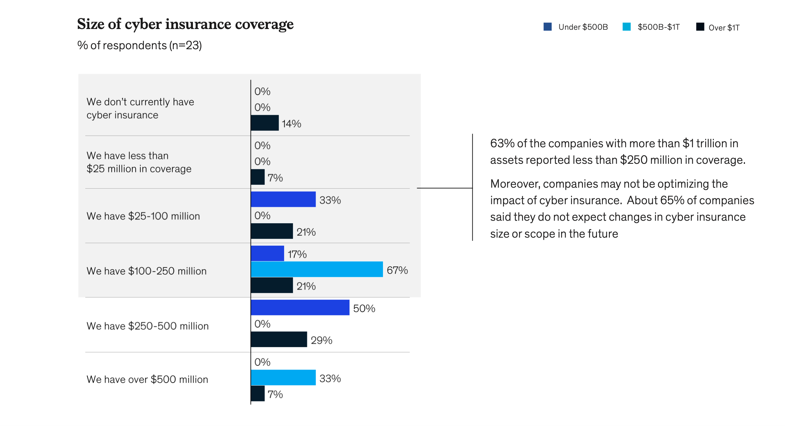
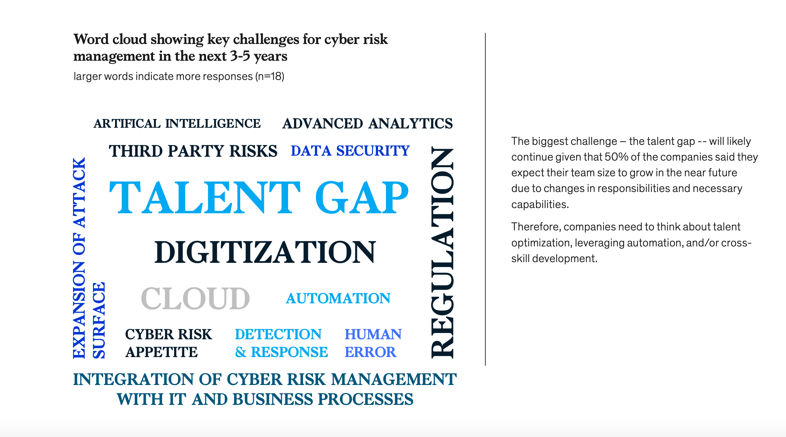
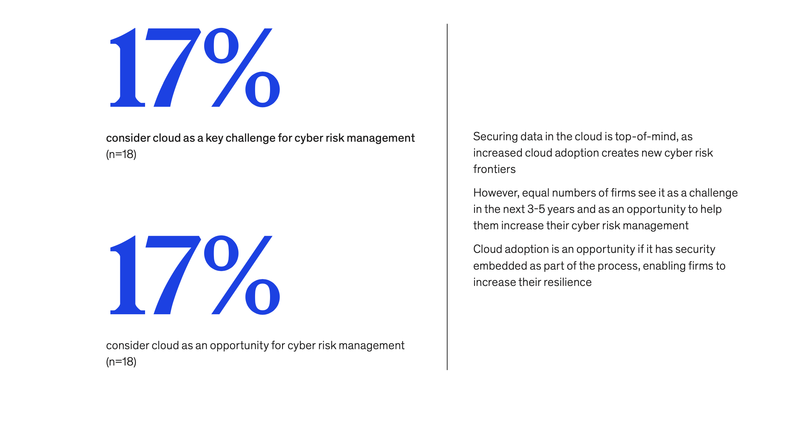

Findings on next-generation questions
Cyber insurance is in the early stages, and there is little correlation between coverage and firm size

Key challenges reported by firms are regulations, cloud adoption, digitization and the talent gap

Respondents consider cloud adoption a challenge and an opportunity
